PBL 数学相关分享材料评阅与设计原则提炼
日期： 2026-11-28
任务范围： 评阅四份下载材料，并按后续要求补充定向外部案例、反例及三路模型复核；不开展实训、原型开发或技术实施，所有结论合并于本报告。
评阅目标： 判断哪些材料与 PBL 数学有关，检验其论证与设计，并提炼带适用条件和检验方法的原则。
读图说明： 本报告的矩阵、流程和数学图由程序依据正文生成；颜色表示文本覆盖或论证关系，不是产品效果分数。原始表格继续保留，以便核对完整定义、来源和边界。视觉以暖白底、深青／蓝／橙／珊瑚色和中文黑体统一呈现，横向图为主，长矩阵采用竖向扩展。AIGC 仅用于无字场景插画，标题、数字与结论均由正文或程序添加。
一、结论先行
1. 相关性结论

| 编号 | 材料主题 | 相关性判断（数学内容 / PBL 学习设计） | 主要用途 |
|---|---|---|---|
| S1 | 微积分基本定理的逐层推导 | 数学内容直接相关；PBL 设计不相关，但可间接支撑原则 7 | 可用于讨论概念依赖、直觉与形式化；不能作为 PBL 设计范例 |
| S2 | AI 原生游戏、建筑数学学习世界、Learning Engine | 直接相关，但不是完整 PBL 方案 | 提供“真实任务需要数学”“确定性学习内核”“AI 不代替解题”等原则 |
| S3 | UE/Babylon 技术选型与物理验证 Prompt | 部分相关 | 提供仿真诚实性、实验记录、技术验证原则；大部分内容不属于 PBL 数学 |
| S4 | 《塞尔达》、迁移、哲学原则与 STEM PBL | PBL 学习设计最直接相关；数学内容相关性中等 | 提供“经验—抽象—迁移”、认知动作分析、模型修正与判断责任等核心原则 |
S4 是学习设计维度最值得保留的底本，S2 是最重要的产品与 AI 补充，S3 只能作为仿真和技术边界补充，S1 只能作为数学内容与概念依赖的参照。四份材料没有一份单独构成完整、可执行的 PBL 数学设计规范。
2. 总体批评
四份材料共同抓住了几个有价值的方向：
- 数学应当成为改变游戏世界、完成真实任务的工具，而不是包裹在游戏外的练习题。
- 游戏经验不会自动变成学科知识，必须经过解释、形式化和迁移。
- 观察、假设、实验、失败、修正，比“玩了一个聪明游戏”更接近可设计的学习机制。
- AI 更适合追问、扮演学伴和支持反馈，而不是直接替学生完成数学。
- 数学规则、学习目标和评价证据需要相对确定，不能完全交给生成式模型自由发挥。
但也共同存在五个风险：
- 把职业情境或游戏任务直接等同于 PBL。学生界定问题、协作、公开成果、互评和结构化反思普遍不足。
- 把游戏行为直接等同于数学理解。“屋顶失败”“桥塌了”“通关了”都不能单独定位知识缺陷。
- 把公式出现等同于形式化完成。写出公式不代表学生理解量、关系、适用条件和模型边界。
- 把高保真物理等同于高学习价值。视觉和物理保真度不能替代概念准确性、支架和评价设计。
- 把哲学类比或带引用标记的论断当成已验证证据。哲学原则可以规范设计，但不能代替学习效果证据；下载稿中的引用标记也没有展开为可核验书目。
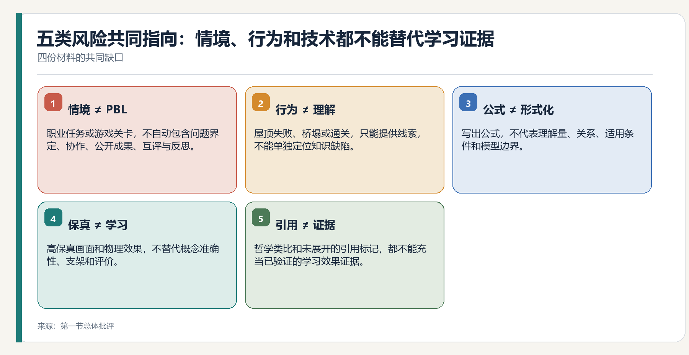
二、材料、证据与统一评价标准

1. 评阅底本
以下行号均指本地下载的 Markdown 文件。
- S1：
2026-11-26-pbl-3-pd/chatgpt-shares/6b07fbdf-3424-83ea-a252-cbcd57d664ca.md
分享链接：https://chatgpt.com/share/6b07fbdf-3424-83ea-a252-cbcd57d664ca - S2：
2026-11-26-pbl-3-pd/chatgpt-shares/6b082f82-0dac-83ea-ad3a-e37a3b8c2486.md
分享链接：https://chatgpt.com/share/6b082f82-0dac-83ea-ad3a-e37a3b8c2486 - S3：
2026-11-26-pbl-3-pd/chatgpt-shares/6b082f4c-823c-83ea-b9d1-cfa993eeda01.md
分享链接：https://chatgpt.com/share/6b082f4c-823c-83ea-b9d1-cfa993eeda01 - S4：
2026-11-26-pbl-3-pd/chatgpt-shares/6b052419-eb98-83ea-8e85-23ca36487261.md
分享链接：https://chatgpt.com/share/6b052419-eb98-83ea-8e85-23ca36487261
四份本地稿均已读取。在线分享页未作为四份对话的评阅依据。下载稿保留了 turn...search...、memcite 等引用标记，但未附完整参考文献列表，因此这些对话内部的引用不被视为已独立核验。第五节新增的外部资料经过定向在线核验，具体核验层级见该节记录。本报告仍不是系统文献综述，也不对未读全文作超出摘要或官网信息的推断。
2. 六维评价标准
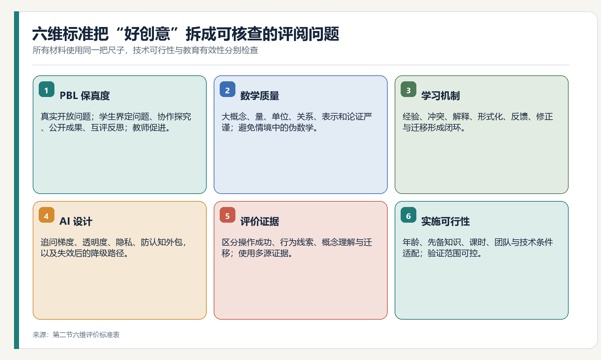
| 维度 | 核心问题 |
|---|---|
| PBL 保真度 | 是否有真实、开放、劣构的问题；学生是否能界定问题、协作探究、公开成果、互评与反思；教师是否为促进者 |
| 数学质量 | 是否围绕数学大概念；量、单位、关系、表示与论证是否严谨；是否避免情境中的伪数学 |
| 学习机制 | 是否形成经验、冲突、解释、形式化、反馈、修正与迁移的闭环，而非只完成游戏操作 |
| AI 设计 | AI 是否促进思考；是否有追问梯度、透明度、隐私、防认知外包及失效兜底边界 |
| 评价证据 | 是否区分操作成功、行为线索、概念理解与迁移；是否使用多种证据，而非由单一行为过度推断 |
| 实施可行性 | 是否适配年龄、先备知识、课时、团队规模与技术条件；是否区分技术验证和学习验证 |
下表是对文本覆盖程度的概括，不是产品效果评分。
| 材料 | PBL | 数学 | 学习机制 | AI | 评价证据 | 可行性 |
|---|---|---|---|---|---|---|
| S1 | 无 | 中：推导详细但有缺口 | 弱：单向讲解 | 无 | 无 | 适合教师参考，不宜直接当学习路径 |
| S2 | 中 | 中：情境强，范围与模型需收紧 | 中 | 中：角色丰富，边界不足 | 弱：隐性评估推断过度 | 偏弱：所谓 MVP 仍过大 |
| S3 | 弱 | 弱至中：主要是物理仿真 | 中：实验循环可取 | 开发 AI 强，学习 AI 弱 | 技术指标强，学习证据弱 | 双运行时和大 Demo 对小团队偏重 |
| S4 | 中至强 | 中：STEM 强，数学进阶不足 | 强：强调形式化与迁移 | 中：重视判断，但“故意出错”需修订 | 中：迁移意识强，量规不足 | 中：哲学全流程可能过载 |
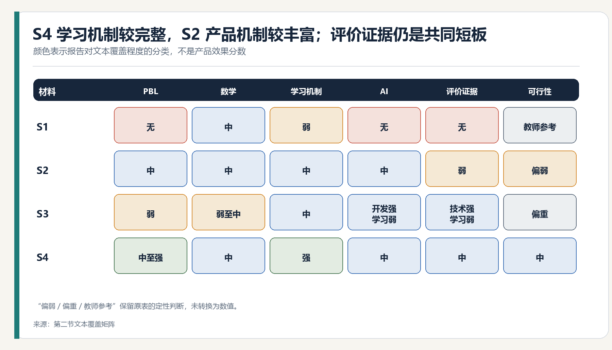
三、逐份评阅
S1：微积分基本定理逐层推导
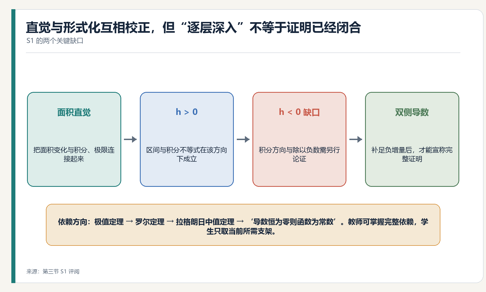
值得保留之处
- 将“面积增加的直觉”与极限、连续、积分存在性连接起来，体现了直觉与形式化互相校正，而非只给计算口诀（S1，L68–136、L346–419）。
- 主动追问“为什么越来越接近能变成等于”“积分凭什么存在”，体现了对概念依赖和自我解释的重视（S1，L132–197、L583–668）。
- 对教师而言，这种依赖图有助于识别学生真正需要的前备知识。
主要问题
PBL 保真度：不具备。材料是完整的讲授式回答，没有学生界定问题、探究选择、协作、公开成果或反思，因此不能因为它使用了“逐层追问”就称为 PBL。
数学质量：结论方向基本正确，但“已经剥到最底层”的表述超过实际完成度。
- 双侧导数证明有缺口。材料在区间
[x,x+h]上积分并直接除以h，保持不等号方向（S1，L362–400）。这一步实际只覆盖了h>0；若h<0，积分区间方向与除法不等号都需另行处理。要证明双侧导数，必须补充负增量论证或明确只证明右导数。 - 递归推导没有兑现到底。第二部分使用“导数恒为零则函数为常数”，并指出需要拉格朗日中值定理（S1，L851–945），但没有继续推导中值定理、罗尔定理及其依赖的极值定理。连续性、一致连续性和黎曼可积之间也仍是提纲式说明。
- 逻辑依赖被画成单链，容易误导学习设计。实数完备性确实是实分析的重要基础，但从完备性到具体定理之间存在多条依赖支路，不能把这条链直接当成学生必须依次学完的课程顺序。
学习机制与评价：没有学生学习证据。“再 build up”是讲解者重建逻辑，不是学生通过表现证明理解；没有反例、解释任务、迁移任务或错误诊断。若作为课堂资源，还必须按年级、先备知识与课时裁剪；这条逻辑链只可能适合部分高年级或高等教育学习者，不能按“基础”之名向更低年级平移。
可提炼原则
概念依赖要梳理，但应按当前问题提供最小必要支架，不追求让学生先学完整个逻辑地基。
S1 更适合作为教师的内容知识参考，同时也是一个提醒：讲解看起来层层深入，不等于证明已经严密，更不等于 PBL 已发生。
S2：AI 游戏、建筑数学与 Learning Engine
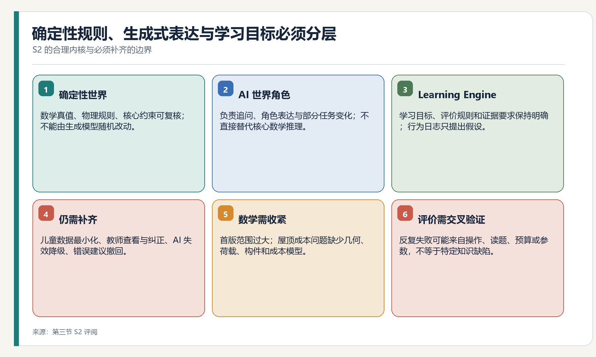
值得保留之处
- “真实职业世界 → 玩家必须使用数学才能解决问题”，优于“数学题 → 游戏化 → 得分”（S2，L790–834）。数学开始承担解释和改变世界的功能。
- “确定性的游戏世界做骨架，AI 做世界里的智能，Learning Engine 做教育的大脑”合理地区分了规则、生成与学习目标（S2，L953–1019、L1461–1519）。
- AI 不直接报答案，而通过“需要确定哪个量、已知哪些量”追问，符合防止认知外包的方向（S2，L1109–1143）。
- AI 同学要求学生解释，具备自我解释和“教中学”的潜力（S2，L1147–1181）。
主要问题
1. PBL 保真度只有一部分。建筑项目具有真实约束和多种方案，但任务、知识清单和 NPC 基本由系统预设。材料没有明确学生能否界定问题、修改目标、组成团队、公开答辩或接受同伴质询。因此它更接近模拟式探究学习/游戏化项目学习，还不是完整 PBL。
2. 数学范围过大，个别情境的数量关系未经定义。首版同时放入面积、周长、比例、体积、一元方程和三角函数，再配多类 NPC（S2，L1308–1366），这不是足够小的单概念验证。另一个例子问“屋顶角度从 30° 改成 25°，钢材成本下降多少”（S2，L824），在没有给定跨度、高度、屋面几何、荷载、构件规格和成本模型时，既不能直接计算，也不能预设成本必然下降。真实职业语境不会自动保证数学问题成立。
3. “数学是世界规则”仍需形式化环节。S2 强调数学隐藏在决策中，却没有像 S4 那样充分展开经验如何变成概念、表示和迁移。若学生只调参到成功，可能学到的是该关卡的策略，而非数学关系。
4. 苏格拉底追问可能退化为程序 funnel。“你觉得应该使用哪一个三角函数”已把学生引向既定公式，未必能检查其是否理解边、角和量的关系。追问应允许学生先表达模型，再根据模型逐步提供支架。
5. 隐性评估存在明显过度推断。材料称学生“每次屋顶设计都失败”，系统就知道“他的三角函数空间推理有问题”（S2，L1370–1406）。失败也可能来自界面操作、预算冲突、物理参数、读题、其他几何知识或随机探索。行为日志只能生成待验证假设，不能直接完成诊断。
6. 可行性评价不足。AI 客户改需求、供应商改报价能增加真实性，也会引入额外噪声；若学习目标与评价未冻结，学生可能在追逐不断变化的条件。Roblox、平台分发和三人团队建议也未充分讨论学校数据、年龄、平台依赖与运维成本。
7. AI 边界仍停留在口号层。材料提到 AI 过度依赖和透明度问题（S2，L786、L973），但没有定义学生可提交的数据、错误回答的处理、教师介入和降级路径。学习系统还需规定：不上传不必要的儿童个人信息；不将 AI 生成内容自动写入学生档案；教师可查看、纠正和撤回 AI 建议；模型不可用或输出越界时退回固定规则、预制追问或教师处理。
可提炼原则
数学真理、学习目标和评价规则保持确定；叙事、角色表达和部分任务变化可以生成。
行为数据用于筛查和提出诊断假设，理解结论必须由学生解释、表示转换和新情境表现共同验证。
S3：引擎选型与 Babylon/Havok 技术验证
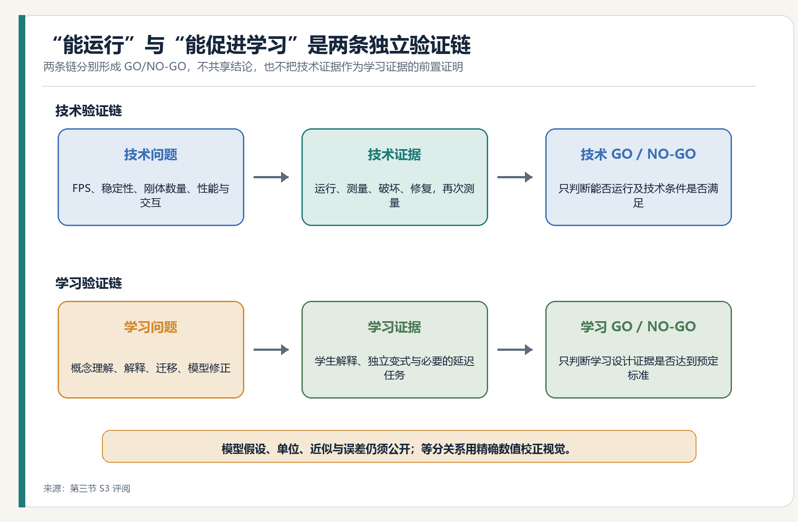
值得保留之处
- 明确要求“不用动画假装物理”，并要求说明浮力近似不是 CFD、绳索是刚体约束近似（S3，L1492–1510、L1566–1627、L1630–1695）。这种模型诚实性对教育仿真很重要。
- 教育模式记录“Hypothesis—Parameters—Result—Error—Revision”（S3，L2190–2242），比只记录答案对错更接近探究过程证据。
- “Run it. Measure it. Break it. Fix it. Measure again.”适合技术可行性验证，也提醒团队不要隐藏失败（S3，L2507–2566）。
主要问题
1. 主体不是 PBL 数学。大部分篇幅是 WebGPU、WebAssembly、物理、材质、性能与工程 Prompt。它可支持学习世界建设，但不能直接证明学习设计有效。
2. 技术验证与学习验证被放在同一决策矩阵中，容易混淆。FPS、刚体数量和实例性能可以判断运行能力，却不能回答“学生是否形成概念”。即使 Education System 被列为评价项（S3，L2531–2559），技术 Demo 也不能据此给出教育有效性的星级。
3. 物理真实不等于概念真实。桥梁或自由落体仿真若使用未经验证的近似，可能稳定地教出错误关系。仿真参数必须与教学目标一致，近似范围必须向教师和学生说明；游戏中的“塌了”也不是天然正确的评价者。
4. 小团队范围失控。“双引擎战略”、19 类实验、材质库、大世界、多人与压力测试同时展开，与三人小团队和快速验证学习目标存在张力。技术尽调可以很大，但学习原则验证应从一个概念和一个任务开始。
5. 星级排序缺少统一权重和实测依据。引擎比较表（S3，L755–766）可作为观点摘要，不能作为已证实原则。本报告不据此判断引擎优劣。
可提炼原则
把“能不能运行”和“能不能促进学习”拆成两条独立验证链。
教育仿真必须公开模型假设、近似和误差；高保真视觉不是学习质量指标。
S4：《塞尔达》、迁移与哲学原则引导的 STEM PBL
值得保留之处
- 明确区分游戏内部技能、相近认知能力和学校学科迁移，不将“烧脑”直接等同于教育效果（S4，L14–29、L98–180）。
- 强调支架、pretraining、自我解释、反馈和显性知识连接（S4，L215–243），纠正“完全自己悟”的浪漫想象。
- Experience → Abstraction → Transfer 是四份材料中最重要的学习原则之一：游戏提供经历，教育系统帮助形成概念，再用不同情境检验迁移（S4，L386–402）。
- 将游戏拆解为观察、假设、实验、失败、建模、组合、替代方案和验证，而不是做“跳跃→物理”“地图→几何”的浅层对应（S4，L665–749）。
- 要求学生解释“原模型—新证据—为何修正”，并检查目标函数本身，体现了元认知和问题定义（S4，L795–915）。

主要问题
1. 这仍主要是个人探究循环，不是完整 PBL。建桥案例有开放任务、实验和修正，但小组协作、角色分工、教师促进者行为、公开成果、同伴互评和结构化反思仍不完整。不能因为存在“假设—实验—修正”就判定 PBL 已闭环。
2. 数学学习进阶不足。案例主要落在物理、工程与优化。公式在经验后出现是合理起点，但仍需明确学生要理解的量、关系、表示、证明和适用条件。“经验后给出公式”并不自动保证概念形成。
3. “游戏不给公式”不能绝对化。S4 前面认可 pretraining 和支架，后面建桥案例又强调“游戏不给公式”（S4，L753–793）。正确原则不是“公式一律后出现”，而是不在学生产生需要之前堆公式，也不在持续无效失败时拒绝提供支架。
4. 哲学映射是设计隐喻，不是学习效果证据。波普尔、维特根斯坦、阿伦特、杜威、康德可以提供规范性提醒，但不能证明某个活动必然促进学习。每个项目依次安排五位哲学家，还可能造成标签化和流程负担。这里批评的是后续助手回答中的映射与流程化方案，不是否定用户原哲学卡片已经写出的“反向用法/别这么用”等自我限制。
5. 波普尔原则必须保留学科边界。经验假设需要可检验、可反驳；数学中的猜想也可用反例检验，但数学证明与经验科学的可证伪性不是同一标准。S4 的用户原文已经提示这一边界，后续设计不能省略。
6. “故意让 AI 给错误答案”需要修订。材料建议通过故意错误检查学生是否盲从（S4，L841–865）。若未说明角色和事后澄清，这可能损害信任、强化错误概念，尤其对年龄较小学生不合适。可改为明示会犯错的学伴/NPC，错误来自预定误解，学生必须用证据质疑，随后必须有结构化复盘。
7. 阿伦特类比的尺度需要克制。用“平庸之恶”类比接受 AI 答案，容易把认识论上的判断外包道德化、羞耻化。教育中更合适的术语是判断责任、主体性和可解释采纳，无需把学生接受建议与严重道德失败相连。
8. 迁移仍需操作化。材料正确强调远迁移困难，但没有给出近迁移、远迁移、延迟保持的区分及评价量规。后续原则必须规定“换什么表面特征、保留什么深层结构、何时测试”。
可提炼原则
分析游戏中不可替代的认知动作，再映射到学科任务；不要按题材表面对号入座。
经验之后必须有形式化，形式化之后必须有变式迁移；哲学原则用于追问判断质量，而不是充当装饰或实证证据。
四、跨材料的关键矛盾及统一处理

| 表面矛盾 | 统一后的判断 |
|---|---|
| S1 要“剥到逻辑地基”，S4 强调经验后再形式化 | 逻辑完备不等于学习顺序。教师应掌握完整依赖，学生只获得当前探究所需的最小支架 |
| S2 强调生成世界，S2/S3 又强调确定性 | 生成适合叙事与表达，数学规则、学习目标和评价证据必须受控、可复核 |
| S2 强调隐性评估，S4 强调显性解释 | 行为用于发现线索，解释和迁移用于确认理解；两者不是替代关系 |
| S4 主张不给公式，同时又承认 pretraining | 公式不必最先出现，但支架不能缺席；根据学生状态逐级释放 |
| S3 追求高保真物理，S4 关注抽象模型 | 仿真只是证据发生器，数学模型才是解释工具；两者必须显式对齐 |
| S2/S4 主张学生教 AI，S4 又建议 AI 故意出错 | 可以使用可质疑的学伴，但错误角色、预期误解和复盘机制必须透明且受控 |
| 多份材料强调自主探索，PBL 又要求协作与公开成果 | 自主不等于孤立；完整 PBL 需要协作论证、公开答辩和反思 |
五、岛屿/小镇学习世界与分数游戏：相关案例和反例
1. 搜索范围与证据边界
用户本轮所称“列岛小镇”按现有《裂岛工匠》与“学员小镇”的组合思路理解，不把它当成一个已确认存在的正式产品名。检索因此扩展到岛屿、小镇、浮岛式学习世界、分数游戏、探究学习和迁移，并选择机制相近的案例，不强行寻找名称完全相同的项目。
以下区分三类证据：
- 研究证据：论文报告了参与者、任务和结果，但仍受学科、年龄与研究设计限制；
- 产品结构反例：用于识别不同设计机制，不据此断言产品无效；
- 设计参照：可启发原则，但不能冒充学习效果证据。
外部资料核验记录（由主评阅者于 2026-11-28 直接读取并核对）：Radix 使用出版方摘要及可读结果片段，核对样本、具体遗传任务与任务完成路径；Crystal Island 使用 PMC 论文摘要、方法与结果信息，核对 94 名大学生、自主条件与研究结论方向；River City 使用 Wiley 论文摘要，核对约 2000 名中学生、三次实施及评价策略差异；Slice Fractions 使用会议论文摘要，核对加拿大 8–9 岁学生、比较表述和迁移表述，未补写效应量或完整实验设计；REFractions 使用 ERIC 记录及可检索正文，按课堂设计描述处理；Isles of What If 与 Sumwhere Isles 只按项目官网确认设计机制，不确认学习效果。各条目均附可点击来源。上述记录只支持报告中实际写出的样本、任务和结果，不代表已阅读所有论文全文或完成独立复算。本地《学员小镇》只按设计文档处理。

2. 直接相关的岛屿/小镇学习世界

| 案例 | 与本方案的关系 | 支持点与反例 | 证据边界 |
|---|---|---|---|
| The Radix Endeavor | 岛屿式、多人、探究型 STEM 世界；论文简介提到嵌入世界的生物与数学系统，但本次所读研究只分析遗传任务 | 特定遗传任务的研究显示学生可通过不同工具路径完成任务，日志可反馈设计；这同时反驳“该任务只有一条可行完成路径”。但任务完成路径不是普遍数学理解的证明 | Cheng 等，2017；高中生后端数据，分析聚焦一个具体遗传任务，339 名参与者。现有证据不足以确认其代数、几何任务结构，也不能直接外推到分数学习 |
| Crystal Island | 岛屿、NPC、信息搜集、科学探究与自适应支架 | Dever 等研究中，按预定路径行动的 partial agency 条件比完全自主更能支持学习和自我调节过程，是“自主越多越好”的反例 | 2023 年公开论文；94 名大学生、微生物学任务。不能直接推出 9–11 岁儿童分数游戏应走固定路线，只能支持“自主程度需要支架化验证” |
| River City | 小镇、多用户、团队探究、数字导师与同伴 | 约 2000 名中学生的三次实施显示学生能够开展虚拟世界探究并受到激励；但评价结果随评价策略而变化，直接提醒我们不能只选对自己有利的“通关”指标 | Ketelhut 等，2010；科学探究而非数学。支持协作探究和评价敏感性，不证明同一种小镇包装适合所有学科 |
3. 本地《学员小镇》：一个结构性对照

AI_Tutor-World/08-学员小镇-世界观.md 是更贴近本项目的内部案例。它明确规定：不使用货币、交易或经济系统，不设置反派、失败惩罚或倒计时；NPC 必须让孩子知道其机器人身份；并声明“来源只支持为什么这样选，不支持这样做有效”（L8–14、L107–119）。九位居民与课程设想较丰富，但文档同时标明“尚未落到代码”，且角色卡完成不等于课程完成（L3、L74–100）。
它构成对 Sumwhere Isles 的结构性对照：小镇可以承载“带来问题—询问—制作—教给他人”，而不是承载答题奖励。它也提供了一条比华丽世界更重要的证据纪律：不假装设计直觉已经证明学习效果。但其NPC透明、无惩罚、多居民等仍是未验证设计选择，不能直接升级为普遍教学原则。
4. 直接相关的分数与小学数学案例
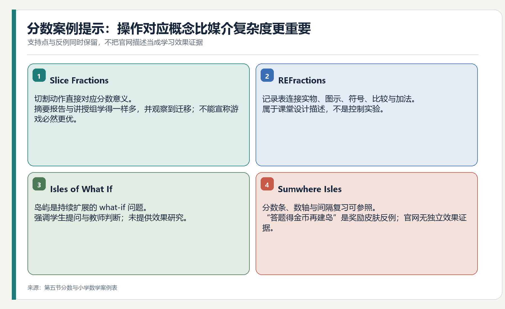
| 案例 | 支持点 | 反例或边界 |
|---|---|---|
| Slice Fractions | 切割操作直接对应分数意义，符号逐步出现，说明游戏动作本身可以承载数学关系 | 会议摘要报告加拿大 8–9 岁学生使用游戏后与讲授组学得一样多，并观察到向更抽象内容的迁移；这不是“游戏必然优于教学”的证据。摘要引用较早研究，具体比较设计与效应仍应查原文 |
| REFractions | 用记录表把实物操作、图示、符号、比较和加法逐步连接，并要求学生记录每一步、讨论和接受教师示范 | 它是课堂游戏/设计描述，不是控制实验。它构成对“必须做复杂 3D 世界”的结构性反例：简单材料也能完成多表征和社会性论证 |
| The Mathematical Isles of What If…? | “岛屿”是一组不断扩展的 what-if 问题，学生逐步提出自己的问题，教师判断探究是否具有数学性 | 岛屿主要是探究隐喻，而非高成本 3D 布景；项目页未提供效果研究，不能据此宣称学习成效 |
| Sumwhere Isles | 分数条、数轴等可操作表示，以及间隔复习，值得参考 | 官网明确描述“答对数学题获得金币，再购买物品建设自己的岛屿”。这是岛屿作为解题奖励的结构反例，不同于“必须运用分数关系才能修岛”。官网未给出独立效果证据，因此这里只批评结构，不断言其无效 |
5. 外部案例对原报告的修正

- 不能把“限制自主”简单视为反 PBL。Crystal Island 提示完全自主可能让学习者分心；真正需要保留的是学生对问题、假设、解释和方案的有意义控制，而不是无条件开放所有行动。
- 不能把多人、岛屿和任务完成直接当成学习。River City 的评价结果依赖评价策略；Radix 的日志结论也是任务特定的。
- 不能宣称游戏天然优于讲授。Slice Fractions 的摘要结果至少是“与讲授相当”，真正值得借鉴的是操作与分数概念的对应，而不是游戏媒介本身的优越性。
- 岛屿不是必备技术层。REFractions 和 Isles of What If 表明，记录表、多表征、问题生成和讨论可以不依赖复杂 3D 世界。
- 必须区分“答题建岛”和“用数学修岛”。前者的岛屿是奖励皮肤，后者的岛屿变化才是数学模型后果；两者不能因外观相似而混为一谈。
- “无失败惩罚”与“桥塌反馈”必须调和。若继承本地《学员小镇》的红线，桥塌只能表示当前物理状态或方案尚未满足条件，不能转化为扣命、倒计时或羞辱；是否采用桥塌机制本身仍需另行验证。
六、可复用原则库
以下原则已经按六维标准重新表述。它们不是从材料中机械摘抄，而是保留有价值部分、补上边界后的版本。
A. 可保留，但需按检验标准执行

| 原则 | 来源 | 操作化检验 |
|---|---|---|
| 1. 让数学成为完成真实任务所必需的建模工具，而不是游戏外的答题门票。 | S2 | 不用该数学关系就无法解释或改进方案；不是答对题后播放建造动画 |
| 2. 采用“经验 → 形式化 → 迁移”的学习闭环。 | S4、S3 | 学生先产生可描述的经验，再用图、表、式或语言表达关系，最后在表面特征改变的新任务中使用 |
| 3. 从认知动作而非题材相似性拆解游戏。 | S4 | 能指出学生必须观察、假设、检验、表示、论证或修正中的哪一个动作，而非只说“搭桥所以学数学” |
| 4. 让失败成为可检验假设的反馈，而非只显示成功/失败。 | S3、S4 | 每次关键实验留下预测、参数、结果、解释和修正；失败后可追溯，而非只重试 |
| 5. AI 优先追问和提供分级支架，不替学生完成核心数学推理。 | S2、S4 | AI 先问量、关系、证据和理由；直接答案被限制，学生最终能脱离 AI 解释；安全、事实纠错、无障碍或防卡住等边界场景另设规则，不作无限禁止 |
| 6. 确定性学习内核与生成式表达分层。 | S2、S3 | 数学规则、目标、证据与反馈口径可复核；AI 不随意改变真值、评价标准或核心约束 |
B. 必须加边界后使用
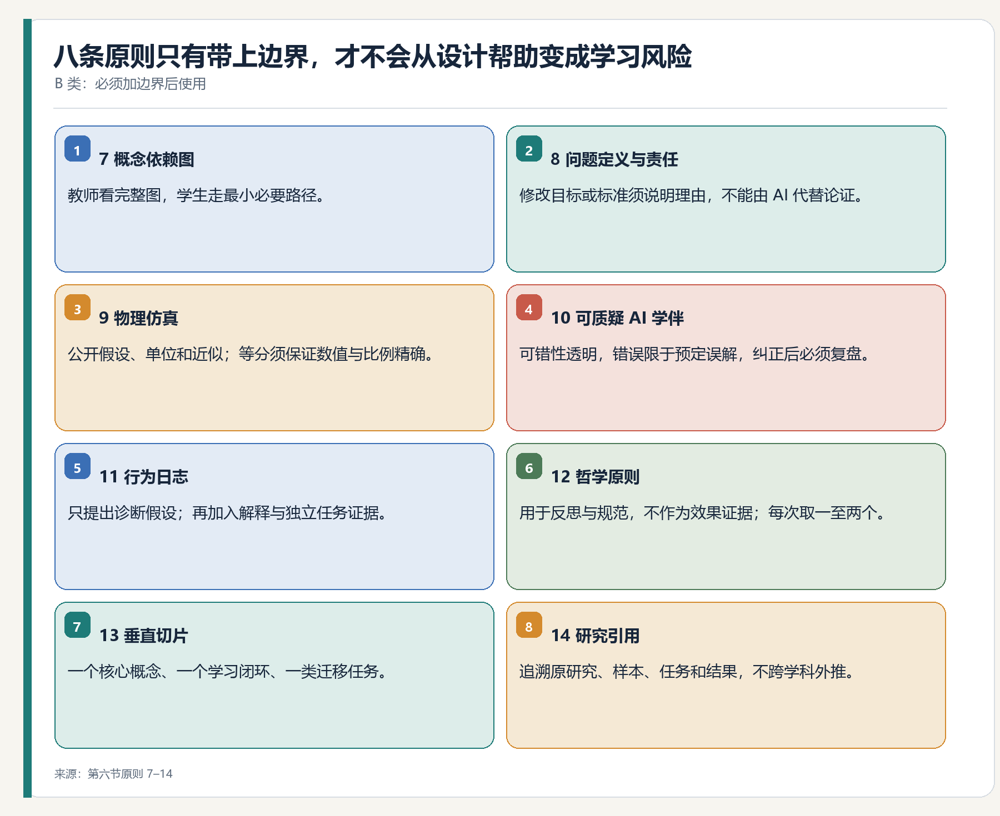
| 原则 | 必要边界 |
|---|---|
| 7. 用概念依赖图设计支架。 | 教师看完整图，学生走最小必要路径；不得因追求“地基完整”造成先备知识雪崩 |
| 8. 培养学生定义问题和判断责任。 | 学生可修改目标、约束或评价标准，但须说明理由；不能由 AI 或哲学家标签代替其论证 |
| 9. 使用物理仿真支持数学探究。 | 公布模型假设、单位和近似；验证仿真与目标数学关系一致；视觉保真度不计入学习证据。若目标概念是等分，优先保证数量、单位和比例精确，避免引擎容差、碰撞或动画抖动把数学上的相等显示成不等；必要时用离散数值和精确分数条校正视觉结果 |
| 10. 在明确边界内使用可教、可质疑的 AI 学伴。 | 可错性至少让教师/家长知情，并向学生作与年龄相适应的说明；错误限于预定误解，学生必须用证据纠正，之后必须复盘，不采用隐蔽欺骗 |
| 11. 使用行为日志进行隐性评估。 | 日志只提出诊断假设；至少再加入一种解释证据和一种独立任务证据，才能判断理解 |
| 12. 采用哲学原则指导学习。 | 作为反思问题和价值规范，不作为效果证据；一个任务选择最相关的一至两个原则即可 |
| 13. 小团队先做垂直切片。 | 只验证一个核心数学概念、一个完整学习闭环和一类迁移任务；技术压力测试另列，不扩张学习范围 |
| 14. 引用研究支持设计。 | 必须能追溯到原研究、样本、任务和结果；特定词汇学习或一般认知收益不能外推为数学学习效果 |
C. 完整 PBL 与外部案例要求补入的原则
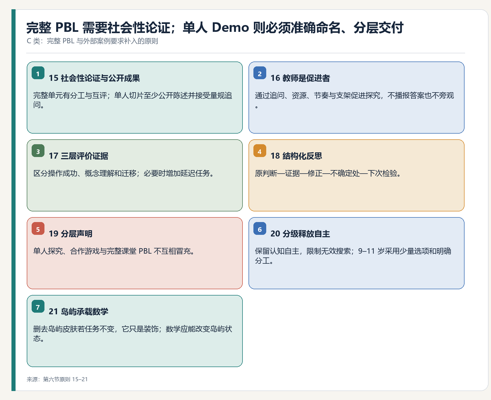
| 原则 | 操作化要求 |
|---|---|
| 15. 完整 PBL 必须包含社会性论证与公开成果。 | 完整单元中，小组有主持人、记录员、汇报员、质疑员等分工；成果公开，其他小组依据量规质疑和反馈。单人短片至少向教师/全班陈述并接受一次量规追问，不得把真实小组互评写成已完成 |
| 16. 教师是促进者，不是答案播报员或完全旁观者。 | 教师通过追问、资源、节奏和支架促进探究，并观察每组是否真正参与和修正模型 |
| 17. 评价必须区分操作成功、概念理解和迁移。 | 至少包含作品/操作、口头或书面解释、变式任务三类证据；必要时增加延迟保持任务 |
| 18. 结构化反思是学习环节，不是结束语。 | 学生明确写出“原判断—证据—修正—仍不确定处—下次如何检验” |
| 19. 单人探究、合作游戏与完整课堂 PBL 必须分层声明。 | 单人版本可以不包含真实小组协作，但应命名为“单人探究 Demo”；若声称 PBL，需补充问题界定、公开成果、互评、促进者和反思，不能用“假定学生会合作”代替 |
| 20. 自主性应围绕学习目标分级释放。 | 保留学生对问题、假设、解释和方案的有意义控制；对信息搜集、工具顺序和任务范围提供必要限制。9–11 岁优先采用明确分工、少量选项、逐步撤除支架和全员发言/记录机制，具体范围通过试用调整 |
| 21. 岛屿或小镇必须承载数学关系或问题生成，而不只是奖励布景。 | 若删去岛屿皮肤后数学任务完全不变，它只是装饰；若学生必须运用分数关系才能预测、解释或改变岛屿状态，才符合本方案的“数学修岛” |
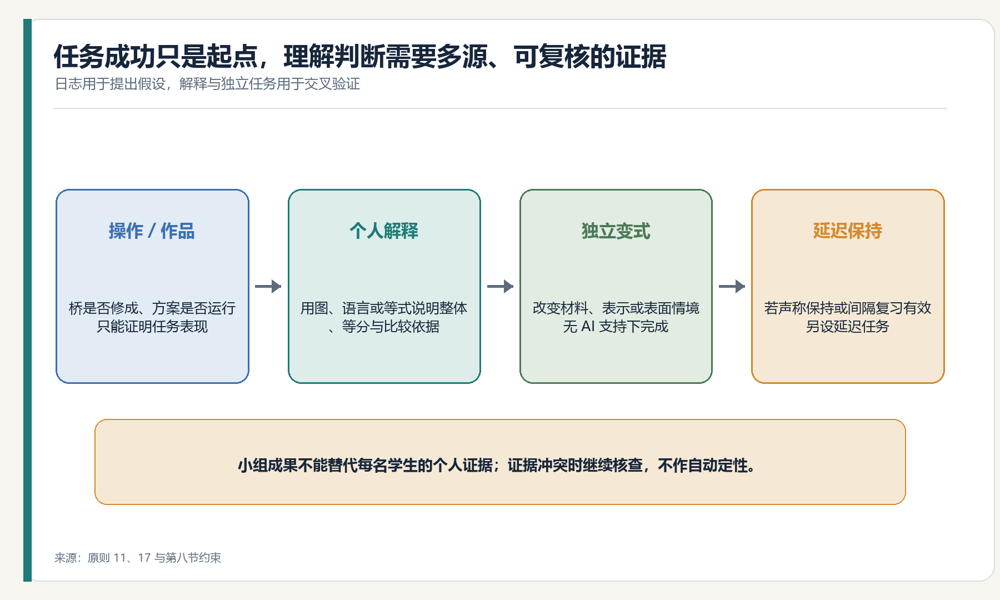
七、明确不应采纳为原则的表述
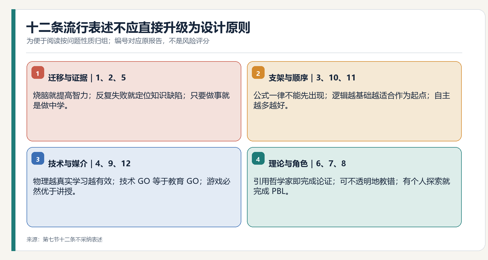
- “游戏很聪明、很烧脑，所以能提高数学或一般智力。”——混淆游戏内学习与远迁移。
- “学生在某类任务反复失败，就能定位某个知识点缺陷。”——单一结果存在多种成因。
- “公式一律不能先出现。”——忽视先备知识、pretraining 和差异化支架。
- “物理越真实、画面越精细，学习越有效。”——技术指标不能替代概念和学习指标。
- “只要学生在做事，就是在做中学。”——没有解释、形式化和迁移时，可能只形成操作熟练。
- “引用哲学家即可完成理论论证。”——哲学类比不能替代学科知识与实证证据。
- “为了防盲从，可以不透明地让 AI 故意教错。”——存在信任和错误概念风险，必须改为透明、受控、可复盘的学伴机制。
- “有个人探索和迭代，就完成了 PBL。”——还缺协作、公开成果、互评、促进者与结构化反思。
- “技术 Demo 的 GO 结论同时证明教育方案可行。”——技术可行性与教育有效性必须分别验证。
- “逻辑上越基础的讲解，就越适合作为学生的学习起点。”——逻辑顺序不等于认知顺序。
- “自主行动越多，PBL 就越充分、学习就越好。”——完全自主可能增加分心和无效搜索；应保留有意义的认知自主，同时支架化行动范围。
- “只要使用游戏，效果就必然优于讲授或其他活动。”——媒介本身不构成优势，关键是数学动作、支架、评价和迁移设计。
八、对当前分数 PBL《裂岛工匠》的直接约束

若方案继续以完整 PBL 名义交付，以下构成硬约束，而不是再扩张为一个庞大的建筑/物理世界；若只是单人探究 Demo，第 7 项按降级形态执行，并明确真实小组协作属于后续课堂扩展：

- 分数大概念先于关卡生成。每个任务明确对应整体、等分、分数单位、等值、比较或迁移中的哪一项；首个 20 分钟切片只取其中一项作为核心概念，AI 不得随机生成超出范围的数学内容。
- 游戏后果必须数学可解释。例如比较
2/5与3/8时，必须明确同一参照整体和所比较的量；两者仅相差1/40，视觉后果不能夸大或含混。 - 桥塌、修岛成功只是第一层证据。若沿用《学员小镇》的“无失败惩罚”红线，桥塌或水位偏差只能是中性状态反馈，不扣生命、不倒计时、不羞辱学生；学生还需用图、语言或等式解释“为什么”，并完成一个改变表面情境的比较任务。
- 小匠采用分级追问。先问整体和等分，再问分数单位与关系，最后才提示共同比较基础；不得直接给通分答案。
- 阿糊可以持有固定误解，但不能随机欺骗。其“分母大则分数大”应可预测、可质疑、可纠正；学生纠正后须说明证据，系统再复盘。
- 隐形教练只提出诊断假设。不能因一次选错就认定学生持有某误解，需结合解释、操作和独立变式交叉验证。
- 公开成果不可省略，互评按切片形态降级。切片中至少向教师/全班口头陈述修复方案及数学依据，并接受一次依据量规的追问；小组分工、其他小组质询与书面互评属于完整单元要求，不能在单人 Demo 中虚构为已完成。
- 延迟复习不能只看再次通关。应换材料、换表示或换参照情境，检查是否仍理解相同关系。

九、采用优先级与最终判断

P0-A：任何学习 Demo 都应先满足
- 经验—形式化—迁移闭环；
- 数学关系和仿真模型可解释、可验证；
- 行为、解释、变式任务多证据评价；
- AI 分级支架与防认知外包。
P0-B：只有宣称完整 PBL 时才额外必须满足
- 公开成果、协作论证和结构化反思；
- 真实且开放的问题、学生的探究选择，以及教师作为促进者的支持。
若当前交付物只是单人游戏化分数 Demo，不必虚构完整课堂协作，但必须明确标注其为“游戏化探究 Demo”，不能在未经验证时宣称完成 PBL 数学学习。
P1：形成稳定方案后再加入
- 可教 AI 学伴（先验证误解角色、答案边界和复盘机制）；
- 自适应任务生成；
- 哲学判断反思；
- 高保真仿真和复杂世界；
- 跨职业、跨学科扩张。
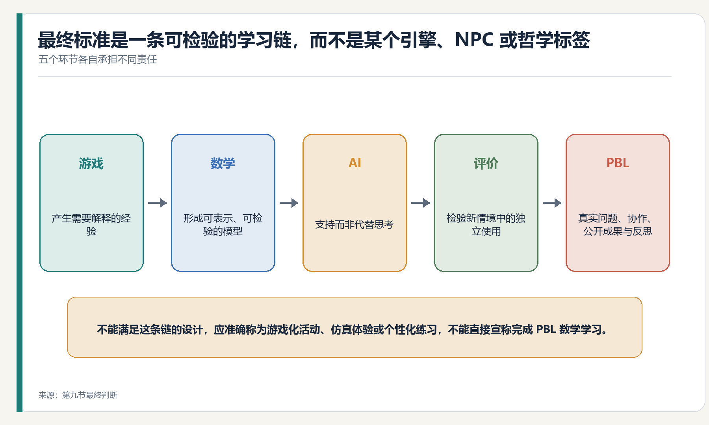
最终判断
这四份材料最有价值的不是某一个引擎、某一种 NPC 或某一位哲学家，而是共同指向一条更严格的设计标准：
游戏负责产生需要解释的经验，数学负责形成可表示、可检验的模型，AI 负责支持而非代替思考，评价负责检验学生能否在新情境中独立使用模型，PBL 负责让这一过程发生在真实问题、协作论证、公开成果和反思之中。
凡不能满足这条链的设计，只能称为游戏化活动、仿真体验或个性化练习，不能直接宣称已经完成 PBL 数学学习。
十、多模型评阅与共识记录
本轮使用三位独立评阅者及不同模型路由，对同一版本进行多轮 console review；所有修改直接合并进本报告，没有形成多份最终产物。

| 评阅方向 | 模型路由 | 主要修正 | 最终结论 |
|---|---|---|---|
| 数学与 PBL 保真度 | 推理型 | 确认 FTC、屋顶成本及 PBL 判断；将 Radix 限定为具体遗传任务中的多条可行完成路径，删除未核实的代数/几何归类及“最优学习路径”推断 | APPROVE |
| 证据、AI 与评价 | 通用型 | 补充年龄边界、AI 隐私与失效兜底、等分数值精度、单人/完整 PBL 区分、自主分级及外部资料核验记录 | APPROVE |
| 对抗性产品与范围 | 轻量型 | 修正任务范围和相关性分类；补入本地《学员小镇》、中性失败反馈、公开成果降级、单概念切片及 P0-A/P0-B 分层 | APPROVE |
前序内容共识：三位评阅者均确认当时版本不存在尚未解决的实质性数学、PBL、证据或范围矛盾。
图表版三路复核
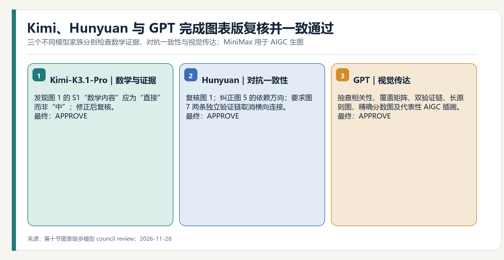
- Kimi-K3.1-Pro（数学与证据）：发现图 1 将 S1 的“数学内容直接相关”误写为“中”。已改为“直接”，并与图 4 的覆盖程度“中”明确区分；修正后 APPROVE。
- Hunyuan（对抗一致性）：复核图 1，纠正图 5 的定理依赖方向，并要求图 7 将技术与学习验证画成两条无横向连接的独立链；修正后 APPROVE。
- GPT（视觉传达）：抽查相关性、覆盖矩阵、双验证链、长原则图、精确分数图及代表性 AIGC 插画，确认十个表格均有对应视觉，未发现实质性视觉问题；APPROVE。
图表版最终共识：三位评阅者均通过当前图表版。该共识只覆盖报告论证、图表忠实性、可读性和证据边界，不表示《裂岛工匠》或任何外部产品的学习效果已经得到验证。
图表复现与资源说明： 程序化图表由 pbl-math-report-assets/generate_charts.py 生成；MiniMax 插画由 pbl-math-report-assets/generate_minimax_art.py 调用官方图像 API 生成，模型为 MiniMax-H3-Image。插画只作情境叙事，程序化图表只呈现本报告已有内容；未新增业务事实或学习效果数据。
本内容由 AI 生成，请核实后使用。